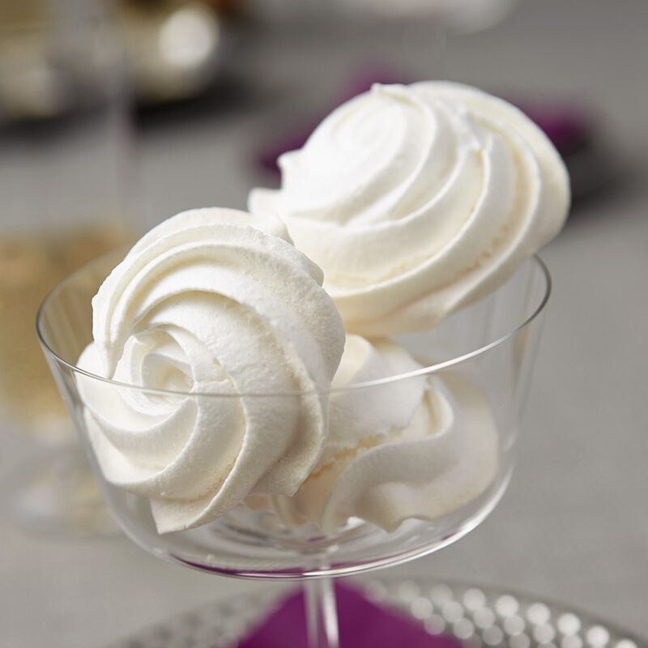

Fhloston Fhluffs

Description
These delicate cookies will make you feel like you've won a trip to paradise.
There's no need to be indimidated by meringues! With a few simple ingredients and a little patience, you'll be super-green.
Ingredients
- two egg whites, ideally at room temperature
- 1/4 tsp cream of tartar
- pinch of salt
- 1/2 cup + 1 Tbsp granulated sugar, ideally superfine
- 1/2 tsp vanilla extract or other flavoring, optional
- blue (or any other color!) gel food coloring, optional
Steps
- Preheat your oven to 200°F (be mindful if your oven runs hot) and line a baking sheet with parchment paper. (Tip: Parchment paper helps to absorb excess moisture!)
- In a large metal bowl, beat the egg whites with the cream of tartar and the salt until soft peaks form. You'll probably want to use an electric mixer.
- Gradually add the sugar and continue to beat until stiff and glossy.
- If using vanilla or another flavoring, fold it in now.
- If using food coloring, paint stripes of it onto the inside of your piping bag or swirl it into the meringue to create random patterns that will pop pop pop!
- Pipe meringues onto your prepared baking sheet. (If you don't have a pastry bag, you can use a spoon.)
- Bake for 1 hour and 30 minutes. Don't open the oven too early! That said, if you like a chewy texture, set a timer for 20 minutes early to check for doneness.
- When the meringues are finished baking, turn off the oven and leave them inside, with the door closed, for three hours. Longer (or overnight!) works perfectly as well.